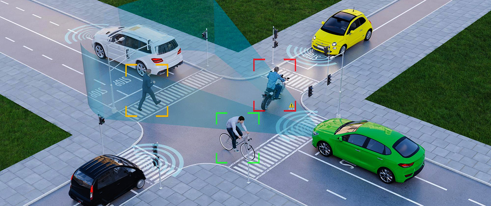
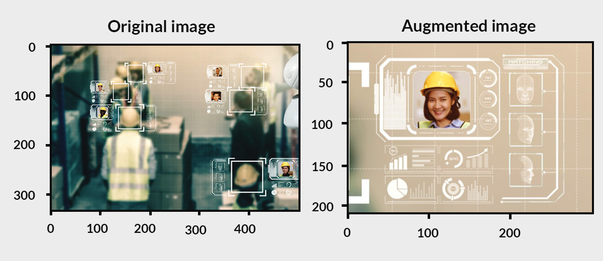
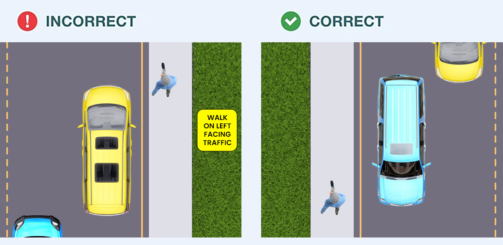
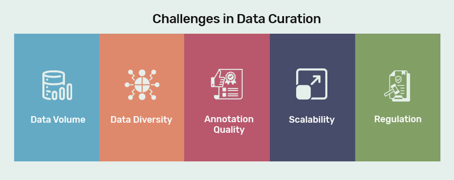

A Practical Guide to Data Curation for Computer Vision
 By Anolytics | 26 November, 2024 in Image Annotation | 7 mins read
By Anolytics | 26 November, 2024 in Image Annotation | 7 mins read
Modern data curation practices involve 2D data collection (cameras) and LiDAR sensors. LiDAR provides detailed 3D spatial data, while cameras deliver 2D visual context. In computer vision, synchronizing these data from multiple sources has become essential for creating robust AI systems.
Companies like Tesla are relying on computer vision technology for self-driving cars. These AI developments aim to reduce accidents and improve traffic flow. With accurate training data, the models can perceive surroundings, identify obstacles, and make driving decisions.
Successful computer vision applications rely on well-curated annotated data. In this guide, we delve into the basics of data curation for computer vision, advantages, and the role of AI labeling companies in building successful AI models.
Data Curation in Computer Vision
In Computer Vision, we train computers to perceive images and videos just like humans. The training data comes in diverse formats that include still images, video sequences, 2D and 3D data visualizations. These data require specialized techniques for annotation and labeling.
When we train models with a large set of images, they make patterns and learn to recognize faces, objects, and other visual components. The resulting model becomes a true reflection of real-world scenarios as it effectively minimizes biases, reduces generalization, and significantly boosts accuracy.
The Importance of Quality Data Curation
If your data isn’t at par, has missing values, or has distribution drift, it needs to be fixed. Data curation lets you spot and fix problems early. Think of it like quality control for your datasets. Without it, your model might give wrong results, miss patterns, or just fail to perform. These small issues can create huge problems later but can be avoided by focusing on data curation.
The benefits include:
1. Enhancing Model Accuracy
Inconsistent or incomplete training data lowers the capacity for the model to give accurate response. A well-annotated computer vision model performs tasks such as object detection, image classification, or segmentation. Fundamentally, it’s about making the model’s predictions as close to the ground truth as possible.
2. Reducing Bias
For any AI model to perform at its best, it should be free from bias. Data bias often stems from unrepresentative or incomplete datasets. To be fair and equitable model outcomes means that datasets are inclusive and reflective of the intended use cases.
3. Streamlining Annotation Processes
The process of labeling more accurate, scalable, and efficient training data is known as "streamlining annotation processes". This is particularly relevant when partnering with AI labeling companies that provide specialized services like video annotation for computer vision projects.
Steps in Data Curation for Computer Vision
Practical data curation for computer vision projects refers to maintaining standards of excellence, inclusivity, and objectivity in training data.
To understand it better, we have outlined the steps involved in data curation supported by an example (pedestrian detection). Let’s explore them below!
1. Defining the Project Goals
The first step is understanding the project’s objectives. For pedestrian detection, the aim is to develop a model that accurately identifies pedestrians in various conditions, weather situations, and traffic lighting circumstances.
Example: An autonomous car detecting pedestrians.

2. Data Collection
Gather representative datasets from sources like public datasets, data labeling and annotation providers, or custom data captured through sensors/cameras. This is where you obtain variations in training datasets, such as urban, rural, and highway settings for pedestrian detection.
Example: A composite grid showing urban streets, rural roads, and highways with pedestrians.
3. Data Annotation
Data annotation involves labeling images with relevant metadata. Common techniques include bounding boxes for outlining pedestrians, segmentation masks for pixel-level accuracy, and keypoint annotation to map body positions. The industry-standard annotation tools such as Redbricks and V7 for scalability and efficiency of training data.
Example: A labeled image of pedestrians with bounding boxes and segmentation masks highlighted.
4. Data Augmentation
This step incorporates curating new data artificially from pre-existing data by using techniques including flipping, color modifications, rotation, zooming, and noise addition. This ensures that the pedestrian detection model is trained with different viewpoints.

5. Quality Assurance
Manual and automated reviews prevent quality failures and ensure labeling accuracy and consistency. For example, checking if bounding boxes accurately fit pedestrians without overlapping with other nearby objects.

6. Data Balancing
Handle imbalances in data, such as the overrepresentation of specific scenarios (e.g., sunny conditions), by adding underrepresented conditions (e.g., night time pedestrians). This prevents bias and improves generalization.
7. Iterative Feedback Loop
Continuously refine data based on model performance. For instance, if the model struggles to detect pedestrians in the rain, add more relevant samples or recheck annotation quality for such conditions.
When you curate your data, you’re not organizing files but checking for gaps in the system. Are values missing where they shouldn’t be? Is the data balanced, or does it lean too much in one direction? These small issues can create huge problems later.
It’s how you make sure your computer vision or machine learning models don’t fail before they even begin. Curation is critical to building robust computer vision models. Following these steps ensures a well-structured, high-quality dataset that reduces biases and improves AI performance.
The Role of Annotation in Computer Vision
Clean, consistent, high-quality annotated data means your models can focus on learning and improving, not trying to work around hidden issues.
Let us learn about common types of annotations for CV:
1. Bounding Boxes
As the name suggests, it involves marking or annotating objects within rectangular boxes. It defines the image's spatial extent. The annotator draws a rectangle around the image, ensuring it is enclosed without exaggerated padding or overlapping.
Industry-wise Applications:
● Retail & E-commerce for object detection in inventory management and automated checkout systems.
● Autonomous Vehicles for detecting pedestrians, vehicles, and traffic signs.
● Agriculture for identifying crops, weeds, or pests for precision farming.
● Healthcare for marking organs or abnormalities in medical imaging for diagnosis or surgery assistance.
2. Semantic Segmentation
Unlike bounding boxes, it offers precise per-pixel object boundaries. The semantic segmentation organizes each pixel of an image into a specific category with a detailed understanding of the background.
Industry-wise Applications:
● Autonomous Vehicles for identifying drivable areas, lanes, and road markings.
● Medical Imaging for detecting tumors or segmenting anatomical regions in scans (e.g., CT or MRI).
● Environmental Monitoring for mapping forest deforestation, water bodies, or urban development.
● Retail & E-commerce for enhancing AR experiences by precisely segmenting products as well from the background.
Also read: What is Data Annotation and it’s importance?
3. Keypoint Annotation
Keypoint annotation involves marking specific points of interest within an image, such as facial landmarks, joint positions, or object corners. The resulting annotations are often used for understanding motion, posture, or structural connections.
Industry-wise Applications:
● In healthcare for tracking joint movements in physical therapy or detecting facial asymmetries for medical diagnosis.
● Sports Analytics in analyzing player movements and techniques.
● Augmented Reality (AR) for tracking facial landmarks for realistic filters or avatars.
● In Robotics to identify grasp points for robotic arms in pick-and-place operations.
4. Video Annotation
Video annotation extends image annotation techniques to moving frames, adding temporal consistency across frames. Tasks may include tracking objects, labeling actions, or annotating scene changes.
Industry-wise Applications:
● Security and Surveillance for monitoring suspicious activities by tracking individuals across multiple frames.
● Autonomous Vehicles in predicting trajectories of other road users and identifying moving obstacles.
● Sports Analytics such as labeling players and their actions for strategy development.
● Entertainment industry for AI-powered video editing or generating realistic visual effects.
The above annotation types have their own benefits in computer vision, with their applications tailored to the unique needs of different industries.
Nevertheless, even if AI has permeated our daily lives and autonomous cars are gradually making their way into our daily lives, we are still in the early stages of development.
Global Computer Vision Market Forecasts to 2030
The global market for computer vision is growing at 6.9% CAGR from 2021 to 2030. It is expected to reach USD 21.3 bn by the year 2030. The market is projected to increase during the forecast period because of the rising demand for computer vision systems that can detect low-quality and incorrectly labeled products.
Challenges in Data Curation

To properly utilize data, it is imperative to overcome challenges in data curation with regard to data volume, quality, scalability, and regulation. Let us understand them in detail below:
1. Data Volume
The amount of visual data is staggering daily with social media platforms, where billions of photos and videos are uploaded every day. This includes images, videos, and multimedia content produced through social media platforms, surveillance cameras, medical imaging devices, smartphones, and other digital sources. The use of smartphones, surveillance cameras, drones, medical imaging devices, and IoT devices is also driving this change.
2. Data Diversity
Diversity in data refers to age groups, ethnicities, genders, cultural backgrounds, etc., factors integrating into training datasets. It ensures that models work equitably across all demographic groups. In facial recognition models, representative data prevents biases that lead to inaccuracies for underrepresented groups.
3. Annotation Quality
The quality of annotation is another challenge to effective model performance. It is dependent on two critical factors i.e. human annotators and AI-assisted tools. They are crucial for maintaining accuracy and quality because poor annotations can compromise how well the model performs.
4. Scalability
As AI projects grow, it gets harder to handle the growing complexity of annotation and labeling as AI projects expand. Managing the increasing complexity of annotation and labeling becomes challenging. Leveraging tools like AI-assisted labeling, cloud storage, and distributed teams helps achieve scalability.
5. Regulation
Maintaining compliance with data regulations renders some data types unavailable and requires a high level of anonymization. Therefore, a compliant-labeling solution with General Data Protection Regulation (GDPR) is required that data be collected and processed in a way that safeguards individual privacy.
How AI Labeling Companies Enhance Data Curation
AI labeling companies specialize in providing tailored solutions for annotation and data curation.
Here’s how they enhance value:
● Annotation companies employ subject matter experts who are adept at handling complex tasks such as 3D object tracking or video annotation for computer vision projects.
● They use AI-assisted labeling tools to ensure accuracy and efficiency.
● With a dedicated workforce, outsourcing annotation tasks becomes more cost-effective and scalable for businesses.
● Professional annotation services meet industry standards, ethical guidelines, and compliances by reducing the risk of bias and inaccuracies in AI systems.
Also read: Five Reasons to Outsource Your Data Annotation Project
Video Annotation for Computer Vision: A Growing Trend
Video annotation is becoming increasingly popular in areas like autonomous driving, security surveillance, and sports analytics. It comprises a labeling process on a frame-by-frame basis to track object movements and identify actions.
The growing complexity of video data annotation has made outsourcing such tasks to specialized companies a viable option. These firms offer expertise in handling large-scale video datasets, ensuring precise annotations for training machine-learning algorithms.
Why Outsource Data Annotation?
The best alternative for successful AI projects is taking annotation services and outsourcing labeling tasks. The benefits are:
1. Cost-efficient: It is cost-efficient, so instead of hiring a whole team, you can actually outsource it, negating the cost of maintaining in-house teams and infrastructure.
2. Quality Assurance: Specialized companies follow stringent quality control processes.
3. Faster Turnaround: Professional teams handle high volumes of data swiftly without compromising accuracy.
4. Focus on Core Competencies: Allows businesses to concentrate on algorithm development and deployment.
Conclusion
Any experienced AI Engineer will tell you that it is common to spend 80% of computer vision model development time on data acquisition, curation, and annotation.
Be it through precise labeling, consistent audits, or collaboration with professional AI labeling companies, each step in the process contributes to creating robust and reliable systems.
As the demand for video annotation for computer vision and other specialized services grows, staying ahead in data curation will be key to unlocking the full potential of AI-powered computer vision applications.
please contact our expert.
Talk to an Expert →
You might be interested

- Image Annotation 04 Jul, 2019
A complete solution for detecting objects using AI and machine learning in images
AI and machine learning are completely relying on training data to develop a model for real-life application. The traini
Read More →
- Image Annotation 18 May, 2021
Why pixel accuracy is the future of the image annotation for Machine Learning?
Training of drones, autonomous vehicles, and other computer-vision based models needs annotated images and videos so tha
Read More →
- Image Annotation 06 May, 2022
The value of image annotation services for AI and machine learning
Identifying, getting, characterizing, and interpreting findings from digital pictures or videos is an image annotation.
Read More →